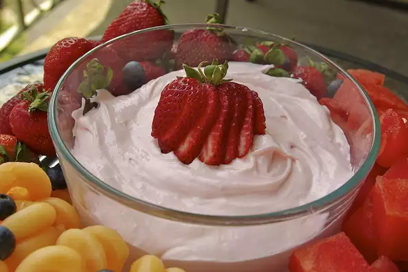

back to home
Strawberry Cream Cheese Fruit Dip

Excellent maple tart
It's light, fluffy, and most importantly, extremely tasty. Goes with all fruits!
Ingredients:
- 1 (8 ounce) container strawberry-flavored cream cheese, softened
- 1 (7 ounce) jar marshmallow creme
- 2 tablespoons orange juice
- 1 cup frozen whipped topping (such as Cool Whip®), thawed
Steps:
- Mix cream cheese, marshmallow creme, and orange juice together. Gently fold in whipped topping.